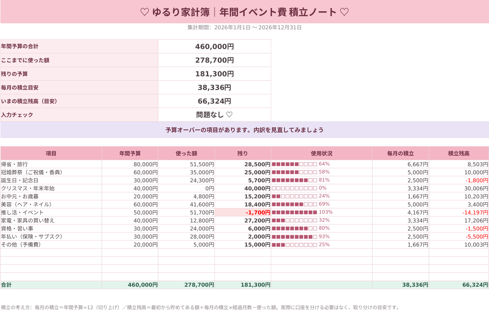

帰省・ご祝儀・誕生日・推し活……。「その月になって慌てる出費」を、年間予算で見える化して、毎月いくら取り分ければいいかを自動で計算します。
年間イベント費 積立ノート
980円（税込）
発売記念価格です。今後、価格を改定する場合があります。
クレジットカード決済（Stripe）／ お支払い後、すぐにダウンロードできます
無料版は、ダウンロード・ログイン不要。スマホですぐ使えます。
毎年かならず来るのに、なぜか「突然」に感じる出費です。
お盆や年末年始の交通費とおみやげで、貯金が一気に減ってしまった。
友人の結婚式が続く月は、思ったより出費がふくらんだ。
家族や大切な人へのプレゼント代を、毎回ギリギリで用意している。
遠征やチケット、年払いの保険やサブスクで、ある月だけ家計が苦しい。
家計簿アプリや手書きが続かなかった方でも、つけるのは「使った日」だけ。
がんばらずに、ゆるりと続けられる積立ノートです。
開始年・開始月、イベント項目と年間予算を入れます。初期値は「例」なので、そのままでも使えます。
入力するのはこのシートだけ。項目はリストから選べます。
毎月の積立目安と、いまの積立残高が自動で出ます。
「ホーム」シートです。予算を使いすぎた項目は、赤く教えてくれます。

※画面は見本のデータです。金額は例であり、ご自身の暮らしに合わせて自由に変更できます。
「日付・項目・金額・メモ」だけ。スマホからでも入力しやすい作りです。
年間予算÷12で、毎月の積立目安といまの積立残高がわかります。
使いすぎた項目は、ひと目で気づけます。
未入力・期間外・項目名の違いに「⚠」が出ます。
行の位置ではなく「日付」と「項目」で集計。並べ替えや行の挿入・削除をしても大丈夫です。
1月始まり・4月始まりなど、開始月を変えるだけです。
イベント項目は最大15個。名前・年間予算・支払予定月を、ご自身用に変えられます。
計算式のあるシートは保護されています（パスワードなし。解除もできます）。
| はじめに | 使い方・色のルール・スマホでの使い方・よくある質問・ご利用について |
|---|---|
| ホーム | 年間予算・使った額・残り・積立残高を、項目ごとに一覧表示 |
| 入力 | 日付・項目・金額・メモを記録（1,000行分が集計の対象） |
| 設定 | 開始年月・イベント項目・年間予算・支払予定月 |
| 月別 | 月ごとの実績・支払い予定・積立残高の推移 |
購入ボタンを押すと、Stripeの安全な決済ページに移動します。
迷われたら、まず無料のお試し版で使い心地をお試しください。
はい。ご購入後のページに、スマホのブラウザでそのまま使える「ブラウザ版」のボタンがあります。ダウンロードや解凍は要りません。記録はお使いのスマホの中に保存され、バックアップ（保存ファイル）の書き出し・読み込みもできます。ExcelやGoogleスプレッドシートで使いたい場合は、無料の「Googleスプレッドシート」アプリがおすすめです。その場合は、最初にパソコンで、Googleドライブにファイルをアップロードして「Googleスプレッドシートとして保存」すると、スマホ・iPadから入力できます。詳しい手順は、ファイル内の「はじめに」シートに載せています。
どちらでも使えるよう、基本的な関数だけで作っています。Googleスプレッドシートで使う場合は、Excel形式のままではなく「Googleスプレッドシートとして保存」してご利用ください。iPad標準の「Numbers」は、表示や動作を保証できないためおすすめしていません。
お支払いが完了すると、ダウンロード用のページが表示されます。そこからExcelファイルを保存するか、「ブラウザ版」のボタンでそのまま使えます。ページのURLは、ブックマークしておくと安心です。
設定シートで、イベント項目の名前・年間予算・支払予定月を自由に変更できます（最大15項目）。名前を変えたときは、入力シート側の同じ名前も直してください。
「入力」シートは1,000行分が集計の対象です。それでも足りないときは、データの途中に行を挿入すると集計範囲も広がります。
ファイルをコピーして「開始年」を変え、入力シートの日付・項目・金額・メモを消去すれば、来年も使えます。余った積立は「最初から貯めてある額」に入れると引き継げます。
お支払い後に、Stripeから領収メールが届きます。なお、適格請求書（インボイス）は発行しておりません。
デジタル商品のため、お支払い後の返品・返金はできません。ファイルに不具合がある場合は、azabumin@gmail.comまでご連絡ください。